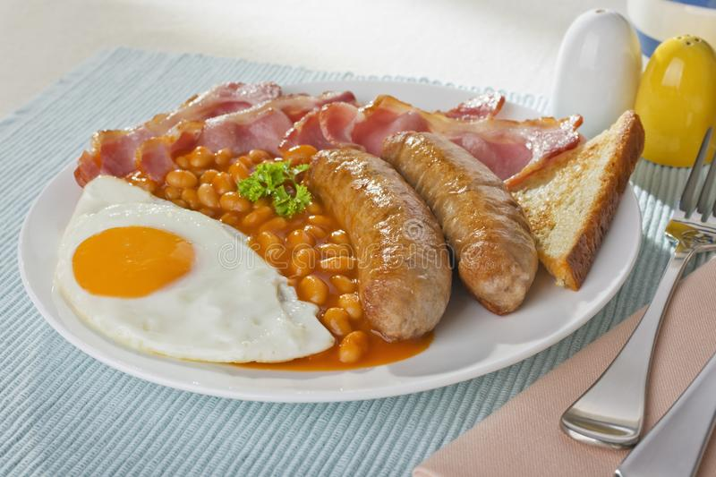

English Breakfast
Home

Nothing like a good old fashioned english breakfast to start your day!
Sometimes you wake up and need a good meal that can fill you up until lunch time and this is the exact meal for that.
A good old fashioned english fry up.
Ingredients
- 1 Tin of beans
- 2 Frankfurters
- 2 Eggs
- 2 Pieces of bread
- 2 Pieces of bacon
- 2 Pork sausages
Steps
- Place the sausages onto a tray and put them on the grill on high heat for 15 minutes with occasional turning.
- Open the tin of beans and chop up the frankfurters. Place both into a pot and leave it on the side for now.
- Crack the eggs and mix them in a bowl.
- Around 10 minutes into the sausages cooking, heat a frying pan on high and place some butter in it. At the same time turn the heat on for the beans pot.
- Place the bacon onto the tray with the sausages.
- Pour the eggs into the frying pan and scramble them for approximately 2 minutes or until golden. Put to the side once done.
- Put the 2 pieces of toast into the toaster.
- Take the sausages and bacon off the grill and turn off the pot with the beans.
- Once the toast is done, spread some butter on it (optional) and grab a plate and serve yourself a plate!
Hope you enjoy the fry up!!!